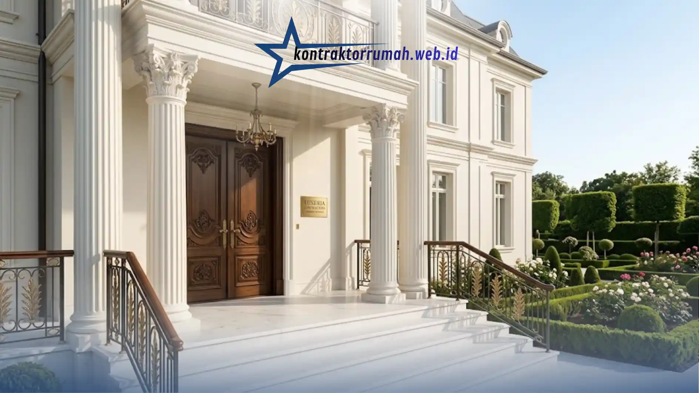

Membangun rumah berdesain klasik identik dengan investasi bernilai fantastis. Namun, sayangnya, banyak hunian yang awalnya tampak megah justru mulai terlihat kusam atau mengalami kerusakan struktural hanya dalam hitungan tahun. Bayangkan kekecewaan ketika pilar penyangga mulai retak rambut, lantai ruang tamu kehilangan kilaunya, atau ukiran pintu utama keropos dimakan usia.
Poin Penting
- Lantai marmer slab impor utuh meminimalisir nat agar kesan hamparan mewah menyatu sempurna.
- Kayu jati perhutani & ulin tua wajib melalui pengeringan maksimal agar ukiran detail tetap presisi.
- Kuningan & tembaga murni jadi standar logam anti-karat untuk railing, gagang pintu, hingga lampu gantung.
- Cat eksterior weather-resistant & anti-jamur melindungi fasad klasik dari retak dan bercak hitam.
- Kompromi pada kualitas bahan baku berisiko merusak nilai estetika & struktur hunian dalam hitungan tahun.
Masalah ini sering kali berakar dari satu kesalahan fatal: kompromi pada kualitas bahan baku. Kerugian yang ditimbulkan pada akhirnya bukan sekadar biaya perbaikan, melainkan hancurnya nilai estetika dari hunian impian Anda. Untuk mencegah hal tersebut, kontraktor rumah mewah yang profesional wajib berpegang pada spesifikasi standar premium berikut ini.
Lantai Marmer Slab Impor
Estetika klasik sangat bergantung pada kesan luas dan megah, dan lantai adalah elemen pertama yang menentukan kesan tersebut.
Kenapa Harus Slab Utuh, Bukan Potongan Kecil?
Penggunaan marmer impor berukuran slab utuh meminimalisir garis sambungan (nat) yang biasanya memutus keindahan motif alami batu. Hasilnya, lantai tampak seperti hamparan tunggal yang menyatu sempurna, layaknya istana, tanpa pola berulang yang terlihat murahan.
Hal yang Perlu Diperhatikan Saat Pemasangan
Marmer slab impor membutuhkan lantai kerja (subfloor) yang benar-benar rata dan struktur bangunan yang stabil, karena bobotnya jauh lebih berat dibanding keramik biasa. Kontraktor berpengalaman akan menghitung beban ini sejak tahap perencanaan struktur, bukan belakangan setelah dinding dan kolom selesai dicor.
Kayu Solid dengan Tingkat Kekeringan Maksimal
Gaya klasik tidak pernah lepas dari ukiran detail pada pintu, jendela, dan panel dinding. Di sinilah pemilihan jenis kayu menentukan umur pakai seluruh elemen dekoratif rumah.
Kayu Jati Perhutani dan Kayu Ulin Tua sebagai Pilihan Utama
Dua jenis kayu ini dipilih bukan tanpa alasan. Serat kayunya rapat dan kadar minyak alaminya tinggi, sehingga tahan terhadap rayap dan tidak mudah lapuk meski terpapar kelembapan bertahun-tahun.
Kenapa Tingkat Kekeringan Sangat Menentukan?
Kayu yang belum kering sempurna (kadar air masih di atas standar) berisiko menyusut, melengkung, atau retak setelah diukir dan dipasang. Proses pengeringan yang tepat, baik secara alami maupun dengan oven kiln-dry, memastikan ukiran detail tetap presisi dan tidak berubah bentuk seiring waktu.

Kombinasi kayu solid, logam anti-karat, dan cat eksterior tahan cuaca menjaga keindahan fasad rumah klasik puluhan tahun ke depan.
Logam Anti-Karat Berdesain Custom
Detail kecil selalu membawa dampak besar pada kesan mewah sebuah rumah klasik. Railing tangga, gagang pintu, hingga rangka lampu gantung adalah elemen yang paling sering disentuh dan dilihat dari jarak dekat.
Kuningan dan Tembaga Murni sebagai Standar
Kedua material ini dipilih karena sifatnya yang tidak mudah berkarat meski terpapar udara lembap dalam waktu lama. Selain itu, kuningan dan tembaga murni dapat diukir secara custom mengikuti motif klasik seperti sulur daun atau garis geometris khas Eropa, memberikan sentuhan eksklusif yang sulit ditiru material logam biasa.
Perawatan Jangka Panjang
Meski tahan karat, logam ini tetap membutuhkan pelapisan khusus (lacquer coating) agar kilaunya bertahan tanpa perlu dipoles ulang setiap bulan.
Cat Eksterior Tahan Cuaca Ekstrem
Fasad klasik yang dipenuhi pilar, profil dinding, dan ornamen ukir membutuhkan perlindungan ekstra dari paparan sinar matahari, hujan, dan kelembapan.
Teknologi Weather-Resistant dan Anti-Jamur
Cat premium dengan formulasi ini bekerja dengan membentuk lapisan pelindung yang fleksibel, sehingga tidak mudah retak saat bangunan mengalami pemuaian akibat perubahan suhu. Kandungan anti-jamurnya juga mencegah munculnya bercak hitam pada permukaan dinding yang sering menjadi masalah utama fasad putih klasik.
Dampak Jika Menggunakan Cat Kualitas Standar
Cat murah umumnya hanya bertahan 2-3 tahun sebelum warnanya pudar dan mulai mengelupas, terutama pada bagian yang terkena hujan langsung. Biaya pengecatan ulang secara berkala justru jauh lebih mahal dibanding investasi cat premium sejak awal.
Catatan dari tim Kontraktor Rumah: Membangun rumah mewah bukan sekadar mendirikan tempat tinggal, melainkan mewariskan sebuah karya seni arsitektur. Kontraktor Rumah memastikan penggunaan material berstandar premium di setiap detail, mulai dari lantai, kayu, logam, hingga cat, agar keindahan dan kekuatan struktur bangunan tetap terjaga puluhan tahun ke depan.
FAQ Seputar Material Premium Rumah Mewah Klasik
Jangan biarkan hunian impian Anda kehilangan nilai investasinya hanya karena kompromi pada kualitas bahan. Konsultasikan kebutuhan material dan spesifikasi bangunan klasik Anda bersama tim kontraktor berpengalaman kami untuk memastikan setiap detail dikerjakan sesuai standar premium sejak awal.